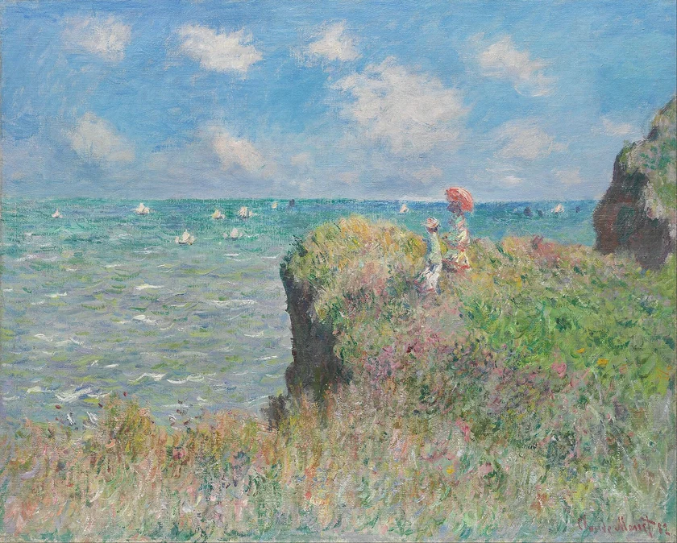
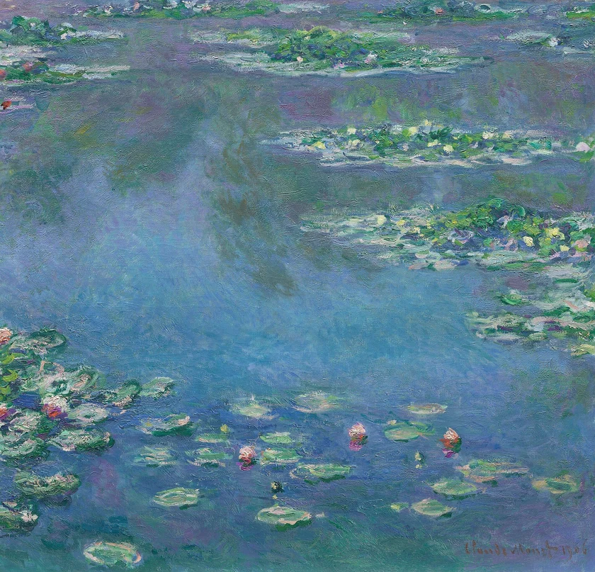
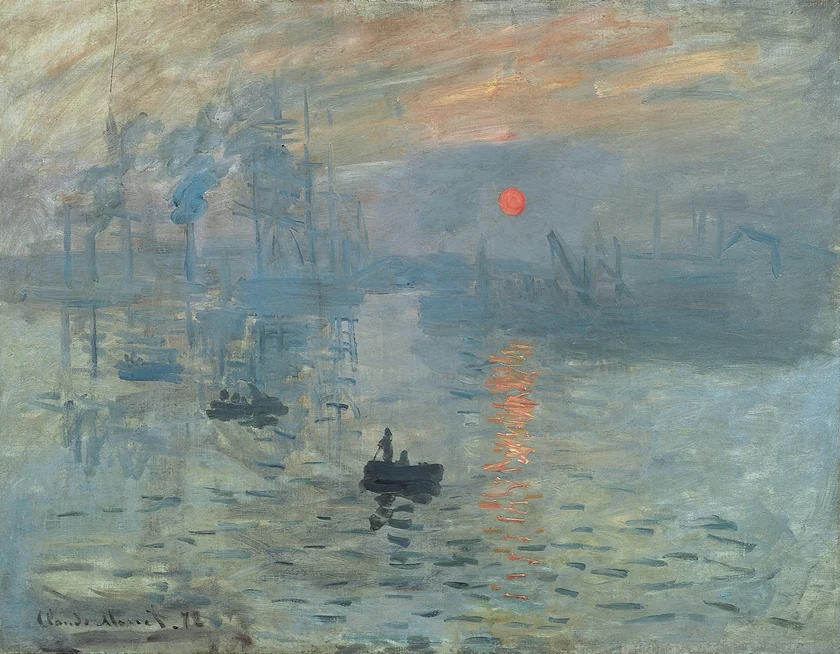
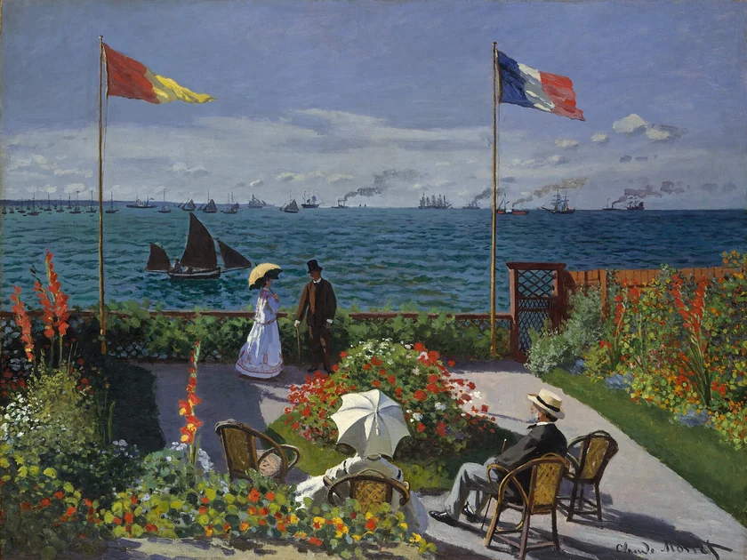

Four paintings, a closer look
Studies
in light.
A small collection of Claude Monet paintings, with space to slow down and look a little closer.
Explore the collectionIndependent web design study
Public domain artwork

Cliff Walk at Pourville
Claude Monet, 1882A few more moments
Select a painting to enlarge


Water Lilies
Claude Monet, 1906

Impression, Sunrise
Claude Monet, 1872

Garden at Sainte-Adresse
Claude Monet, 1867About the study
A little space.
A clearer view.
I made this layout to give the artwork room, keep the captions readable, and make the collection easy to explore on a phone or a larger screen.
I take small website fixes and layout projects. A page link, a screenshot and a description of what needs changing are enough to start a conversation.
Open a project enquiryAn independent demo by jackspiece. Paintings by Claude Monet.
Public domain image sources are listed in the image credits.
Select any painting for its source record.